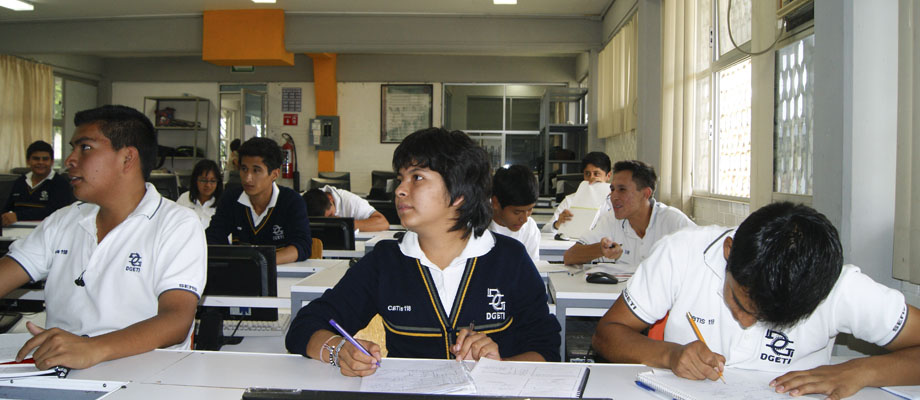
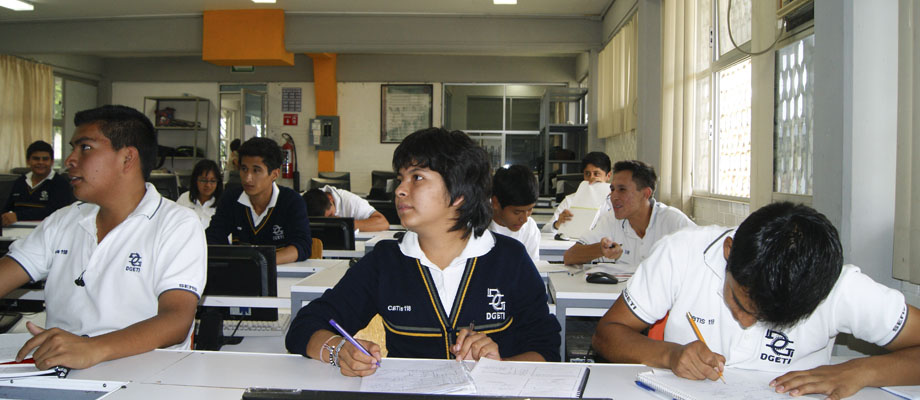

Título I. Los Derechos y Obligaciones. Son derechos de los alumnos los siguientes:
Artículo 1. Tener igualdad de oportunidades para realizar su educación dentro de los lineamientos de este
reglamento y de acuerdo con los planes de estudio, programas y disposiciones que dicta la Secretaría de
Educación Pública.
Artículo 2. Recibir de la Institución la formación académica correspondiente a cada programa.
Artículo 3. Ser informados por sus profesores de los objetivos de sus materias, de los contenidos que las
conforman, los criterios de evaluación y calificaciones.
Artículo 4. Ser informados sobre las actividades académicas complementarias de conformidad con el
plan que cursen.
Artículo 5. Ser reconocidos por su desempeño académico, deportivo y/o cultural mediante el
otorgamiento de diplomas o reconocimientos.
Artículo 6. Hacer uso de manera respetuosa del derecho de petición ante los profesores y/o autoridades
del plantel, ya sea de forma oral o escrita.
Artículo 7. Ser respetado en su integridad física y moral por todos los miembros de la comunidad
escolar, así como recibir trato amable, digno y respetuoso del personal adscrito a la Institución.
Artículo 8. Igualdad de oportunidades para el desarrollo integral de su formación como alumno de esta
Institución.
Artículo 9. Expresar libre y respetuosamente sus ideas y opiniones que contribuyan al buen
funcionamiento de la comunidad escolar.
Artículo 10. Recibir su credencial que lo acredite como alumno de la Institución de acuerdo a los
requerimientos establecidos.
Artículo 11. Recibir asesoría del personal docente en aspectos académicos.
Artículo 12. Recibir orientación de personal administrativo en los trámites correspondientes.
Artículo 13. Recibir tutoría por el personal que le sea asignado por la Dirección de la Institución.
Artículo 14. Utilizar los servicios, instalaciones y equipamiento escolar de conformidad a las normas que
determinen las autoridades y de acuerdo a la demanda del servicio.
Artículo 15. Presentar de manera respetuosa queja o sugerencia a través del buzón de la Institución.
Artículo 16. Los demás que establecen la normatividad de la D.G.E.T.I.
Artículo 17. Todos los alumnos tienen la obligación de guardar orden dentro del plantel.
Artículo 18. Contar con su historial académico y constancias de estudio (siendo este un trámite gratuito).
Obligaciones de los alumnos: Son obligaciones de los alumnos las siguientes:
Artículo 19. Cumplir con las disposiciones de la normatividad de la D.G.E.T.I. así como del presente
reglamento, comprometiéndose a su cabal observancia sin excepción, mediante su aceptación al
inscribirse.
Artículo 20. Comprometerse en el cumplimiento de las actividades establecidas en el calendario escolar
correspondiente.
Artículo 21. Asistir puntualmente y colaborar en todos los eventos (internos y externos) que organice la
Institución.
Artículo 22. Asistir de forma puntual a las clases en los horarios establecidos. Además deberá asistir al
80% mínimo de hora-clase por cada periodo parcial para tener derecho a ser evaluado.
Artículo 23. Conducirse con respeto, decoro y justicia con las autoridades, personal docente,
administrativo, de apoyo y sus compañeros.
Artículo 24. Cubrir los requerimientos financieros y administrativos en forma puntual.
Artículo 25. Informar de los cambios de domicilio, correo electrónico y/o teléfono que realice.
Artículo 26. Portar en lugar visible y en todo momento su credencial de estudiante durante su estancia en
la Institución y solicitar el refrendo correspondiente, así como también, registrar su entrada en los
Dispositivos electrónicos instalados para tal efecto.
Artículo 27. Participar en las actividades de simulacros y seguridad que promuevan y determinen la
Institución y la D.G.E.T.I.
Artículo 28. Respetar los símbolos patrios, Bandera Nacional , Escudo Nacional e Himno Nacional.
Artículo 29. Hacer buen uso de las instalaciones, mobiliario, equipo y demás bienes del plantel, además
de mantener limpias las instalaciones del Plantel.
Artículo 30. Siempre se deberá portar el uniforme con orgullo y dignidad:
●Mujeres: Playera de la escuela, (Blanca con logo AZUL, y falda GRIS de largo abajo
de la rodilla, calceta escolar blanca y zapatos negros.
●Hombres: Playera de la escuela blanca con logo AZUL, pantalón GRIS (no mezclilla,
bombacho, sin deslavar, ni roto), calzado negro (zapato) y cabello corto.


 
